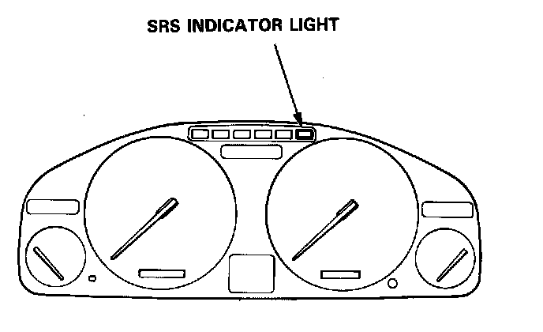

Self-Diagnostic Function
Self-diagnosis Function
The SRS unit includes a self-diagnosis function. If there is a failure in the sensors, SRS unit, inflator, or their circuits, the SRS light in the instrument panel goes ON.

As a system check the SRS light also comes on when the ignition is first turned to the II position. If the light goes off after approximately 6 seconds the system is OK.
If the SRS light remains on (or fails to come on in the system check mode) one of the SRS components (or the wiring/connectors in-between) is faulty.
Troubleshooting precautions
- When attaching any of the test harnesses, push the connectors straight-in until they are secure; do not bend the connector pins.
- Always use the test harness. Do not use test probes directly on component connector pins or wires; you may damage them or the control unit.
- Always keep short connectors on both the driver's airbag connector and the front passenger's airbag connector when the harness is disconnected.